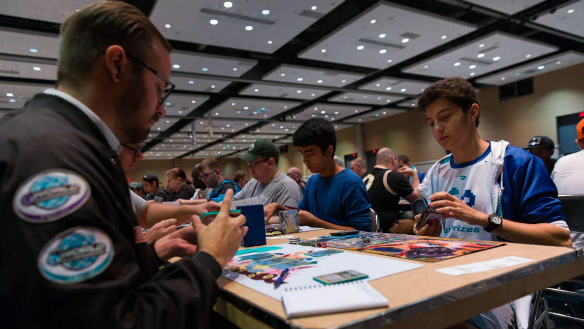
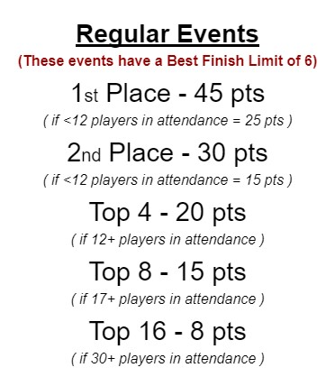
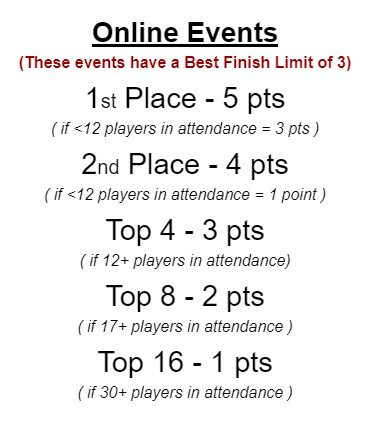
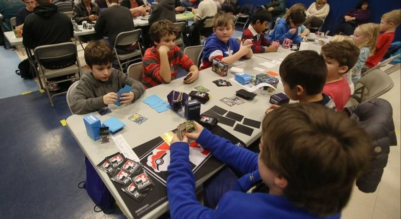

2023 South East Series Championships
From October 2022 through March 2023, players from around the South East can compete and earn points to earn an invite to the first ever SE Grand Prix in April!
There will be numerous events each month all throughout North Carolina, South Carolina, Georgia, & Tennessee! Compete in as many events as you like to accumulate points to climb the ranks of the South East and earn a spot in the most prestigous event on the East Coast! The SE Grand Prix Champion will not only be known as the best, like no one ever was, but will be presented with a 1st Place Trophy, Champion playmat, TCG prizes, and more!
Earn Points ("SE Points")
Invitation = 100 SE Points
(Players that reach 250 SE Points earn a Rd 1 Bye at the SE Grand Prix)
Events around the South East will be announced throughout the year, although each event will be different in the form of prizing, organizer and location... the point structure will always be as follows for the top finishers of regular, frequent series' events throughout participating States:
(IMPORTANT: Although you can play in any number of events as you choose, only a player's best 6 "finishes" will be awarded SE Points towards an SE Grand Prix invitation. For example, if a player makes Top 8 in six events, they'll have 90 Points. If said player makes Top 8 at a seventh event, they would not earn additional points, rather the only way for said player to earn more points is by placing Top 4 or higher in an additional event.)
There will be exciting new events joining the Series this season in the form of individual "State Championships!" Players will have the opportunity to earn even more SE Points towards their SE Grand Prix invitation by competing in a State Championship. However, only a player's best result will count towards their Invitation and the Rankings. Don't miss out on your chance of winning a State Championship, as each State Champion earns the equivelant of an automatic invitation! State Championship's point structure as follows:

Additionally, players can compete in Online tournaments for points as well! Although they don't provide as many points as IRL events, they could make the difference in someone earning their invite or not. (IMPORTANT: While it's okay to use someone else's PTCGO account, players found to be playing in someone else's place online could result in a double ban!)
Attendance Points
For each event a player attends throughout the season (not counting online events), they'll recieve 1 Attendance Point. What are they for? Well first off, the 4 players at the end of the season with the most Attendance Points (who haven't earned 100 SE Points) recieve an automatic invitation to the SE Grand Prix!
Additonally, any and all players who earn at least 1 Attendance Points will be eligible to particpate in the Last Chance Qualifier, an event taking place the day before the SE Grand Prix. The top finishers of the LCQ will earn the privelage to compete in the Grand Prix the next day! So get out there and play!
Event Structuring
In order to keep all events consistent throughout the series, all stores/organizers must follow these rules for all events, no exceptions.
All rounds MUST be timed accordingly, to insure that the state of the game is followed and the rightful outcomes occur.
Swiss Rounds:
• If 12 players or fewer - 4 rounds
• If 13 players or more - 5 rounds
• If 33 players or more - 6 rounds
• If 65 players or more - 7 rounds
• Best of 1 - 30 minutes
Top Cut:
• If 8 players or fewer - no cut
• If 9 players or more - Top 4
• If 20 players or more - Top 8
• Best of 3 - 60 minutes
Available Format(s)
For the start of the season, until further notice, ALL events will use the Standard Format.
• Standard Format
Who can Play?
Well, anyone! Players of all ages are invited to attend and compete for their spot in the final State Championships! Though, do understand that there will be NO seperation in age divisions throughout South East Series events.
Though this series is catered towards the players of the South East, anyone from anywhere is welcome, you do not need to be a resident of a South Eastern State to attend or play. Anyone can earn an invite, and anyone with at least 1 Attendance Point can compete in the LCQ in April.
Please note that players who are banned from sanctioned events due to not being in compliance with Pokemon's code of conduct/guidelines, are not allowed to participate. If you feel that this shouldn't apply to you or should recieve an exemption, reach out to us and we will respond and make a decision per individual basis.
Host an Event
Want your store to be part of this tournament series? Email us at carolinaseriestcg@gmail.com to create and register an event so that your local players, and those willing to travel, may earn SE Points towards their invitation to the 2023 SE Grand Prix!
Let's get everyone involved and spread the word, the more players, the better. The more stores, the better! If you know of a store/location that'd be perfect to host an event, have said store or organizer email us at carolinaseriestcg@gmail.com.
SE Grand Prix FAQ
When: The final Invitational Tournament will take place in April 2023. (date & location TBA)
Who can Play: Anyone who earns 100 SE Points or more, the Top 4 Players in Attendance Points, & the top finishers of the LCQ!
Invitational SE Grand Prix Event Info:
- Standard format
- Swiss Rounds into a Top Cut (TBD)
- Prizing: Trophies, Playmats, TCG Products, limited-edition dice & more!
Health & Safety
The health and safety of everyone is very important to us. While Pokemon's officially sanctioned events require masks. South East Series events will align with each venue's / state's policies. So, while we recommend everyone to be as safe as possible, if a store doesn't require masks, said event won't either to keep things simple.
Store's mask requirements, or lack-there-of, will be clearly stated per event's info page, though again, masks are recommended at each event, not just to keep in compliance with Pokemon's wishes, but to protect yourself and fellow Pokemon fans!